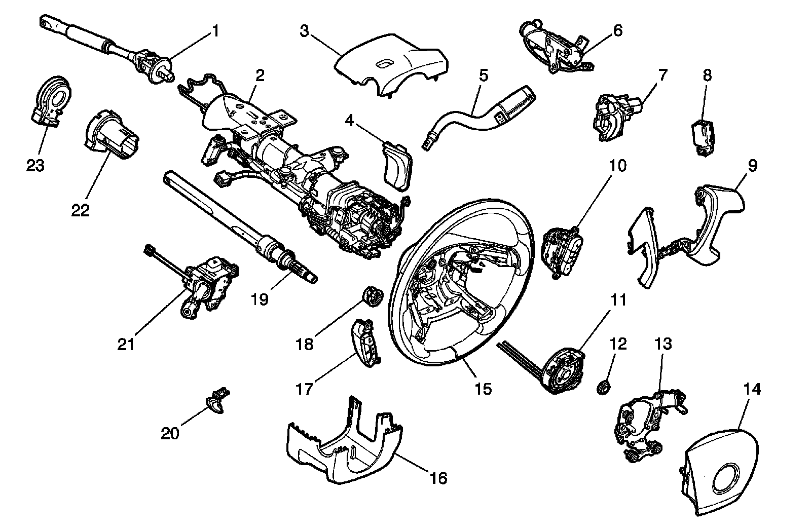

Exploded Views
Steering Column Disassembled View
Disassembled View

1 - Intermediate Steering Shaft
2 - Steering Column
3 - Upper Steering Column Cover
4 - Shift Lever Seal
5 - Shift Lever
6 - Linear Shift Assembly
7 - Ignition Cylinder and Case
8 - Ignition Switch
9 - Steering Wheel Trim Covers
10 - Steering Wheel Switch
11 - SIR Coil
12 - Steering Wheel Nut
13 - Horn Switch Contact Assembly
14 - Steering Wheel Inflatable Restraint Module
15 - Steering Wheel
16 - Lower Steering Column Cover
17 - Steering Wheel Switch
18 - Turn Signal Cancel Cam Assembly
19 - Steering Shaft and Upper Bearing Assembly
20 - Tilt Assembly
21 - Multifunction Turn Signal Switch
22 - Steering Shaft Lower Bearing Adaptor
23 - Steering Wheel Position Sensor